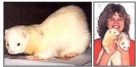

MOTHER'S CHILDREN
This ferocious hunter can be a gentle pet.
MATT AND LAURA WERE JUST TWO months old when Dad brought them from the fur farm. The two ferrets were soon put to work keeping rats out of our barn, but we liked them so much that they've become pets, as well.
Matt and Laura may seem like strange names for ferrets, but my dad thought the names suited them just right. He named them after my brother and me, because they squabbled all the way home in the car, just like the two of us.
It's been four years since Matt and Laura came to live with us. Now we also have two of their children. We've learned a lot about ferrets and have grown very fond of the curious little animals. Domestic ferrets are related to the endangered black-footed ferrets found in Wyoming, but they are not wild animals. In fact, some people believe that the ancient Egyptians kept tame ferrets to catch mice long before cats were used for the job. Farmers often kept several pairs in their barns and granaries to catch mice and rats. And ships' captains used to let as many as two dozen ferrets loose in the holds of their ships to catch rats. Being small and weasel-shaped, ferrets can go right into rat holes after their prey. They are ferocious hunters and sometimes kill more than they need to eat.
Rats had tunneled into our own barn to eat the feed our chickens scattered. Dad didn't want to put poison out because he was afraid owls and snakes might eat poisoned rats and die. And the intelligent pests were difficult to catch in traps. So when Matt and Laura arrived, Dad let them run through the barn's rat holes to leave their scent in them. Then he put them in a cage in the barn.
Just their being in the barn scares rats away-we haven't seen one in years. Life is not all work and no play for our furry pets. Whenever we want to have fun with them, they're ready and willing. We play outdoors when the weather's nice. The ferrets hop forward, backward and sideways, with their backs humped up in an inverted U shape, all the while chattering at us. They like to dig in the grass and look for holes to crawl into. Once Laura crawled up my pants leg and got stuck at my knee. Her whiskers tickled me so much I could barely keep still to let her back out. She also likes to crawl into my coat pocket and peek out the top while I take her for a bike ride.
When it's cold outside, we play together in the house. We make a ferret playground in the basement out of carpet scraps, boxes, bags and large plastic tubes. Matt crawls through the obstacle course and flops the carpet pieces up with his back. When I hold him on my lap and stroke his chin, he stretches his head back and yawns to show he likes the attention.
Our ferrets live in pairs in all-wire rabbit cages. Inside its cage, each pair has a wooden box measuring 10" X 12" X 12", with a four inch-round entrance hole. I pack straw bedding in these "giant birdhouses" when the weather is cold. I give them fresh food (dry cat food with raw hamburger or cooked chicken gizzards for treats) and water twice a day. They come out of their houses and wait for me at feeding time. If I don't pick them up, they try to crawl up my pants into my arms. They are affectionate animals and want to be petted and played with. Laura always checks my pockets to see if I've brought her a treat.
" 'Laura' likes to crawl into my coat pocket and go for a bike ride."
Although you can let an indoors ferret have the run of the house, it's best if it has a cage to rest in. They sleep about half the day and prefer resting in dark, secluded places. (Watch out that your dad doesn't squish your pet when he sits down in the easy chair with the evening paper.) Ferrets also like to slip out the door when you open it. One of my friend's ferrets snuck out the door one afternoon and turned up the next morning-in her next-door neighbor's bed!
Ferrets are tidy animals. Put a litter box in the corner they habitually use for their toilet (with a sample of their droppings in it), and they'll soon learn to use it.
They are also quiet. A ferret doesn't ordinarily make any noise, but if you step on it or close its tail in a door, you will discover that it does have a voice! Your ferret may also chatter happily when you're playing with it.
Still, a ferret may not be the right pet for you. They have to be properly cared for, just like any other pet. They also produce a strong musky smell to attract mates. Other ferrets may enjoy this odor, but most people don't. So you either need to bathe a house ferret regularly or have a veterinarian surgically remove its musk glands.
Unneutered female ferrets need to be bred during their mating season, or they may become sick and even die. Since we bought a male and a female, we became ferret raisers. Females generally have one litter a year, with anywhere from five to 10 kits (babies).
Young ferrets play rough and bite each other. They may nip you, too, until you teach them not to (tweak their noses and say "No" firmly). A few young ferrets nip a lot and need to be handled with gloves until they outgrow their nipping stage and are comfortable being handled.
I have raised about 60 young ferrets and sold them as pets when they were eight to 10 weeks old. You can purchase them as pets from a fur farm, pet store or small breeder, such as myself. Be sure to get a healthy one with bright eyes, soft (not rough and broken) fur and an active, playful personality.
And learn all you can about them by reading a good book, such as Wendy Winsted's Ferrets (T.F.H. Publications).
I'm really glad we have ferrets in our family. They do a good job of scaring rats out of our barn, so we don't have to use rat poison. And, on top of that, they're the best pets I've ever had.
|
 Domestic ferrets make fascinating pets. ""Jake'. (left) is just one of the 60 ferrets Laura Wendling has raised |
|
|